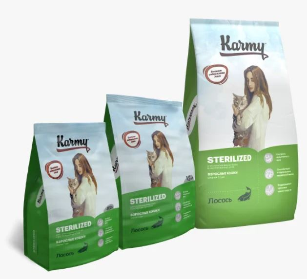
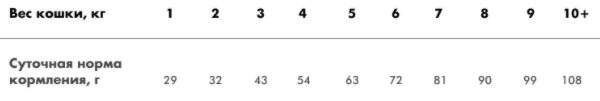

Полнорационный сухой корм для стерилизованных кошек и кастрированных котов, старше 1 года

Проследите чтобы у кошки всегда был доступ к свежей воде.
В зависимости от предпочтений вашей кошки корм можно давать сухим или увлажненным.
Рекомендуемая суточная норма является ориентировочной и зависит от сезона, уровня активности и физиологических особенностей питомца.